Nuestra Estrella: El Sol (parte 1)
Los números básicos del Sol, y la gran pregunta detrás de esta clase: ¿de dónde saca su energía? Descartamos la combustión y la contracción gravitacional, y llegamos a la fusión nuclear vía la cadena protón-protón, el termostato solar y el largo viaje de los fotones hacia afuera.
El Sol emite cada segundo una cantidad de energía descomunal —la diapositiva la compara con 10.000 millones de lavadoras por cada ser humano, funcionando todo el tiempo— y lleva haciéndolo, de forma casi perfectamente constante, unos 4.600 millones de años. Eso plantea un problema de ingeniería energética a escala astronómica: ¿qué “motor” puede sostener una potencia de durante miles de millones de años sin agotarse ni enfriarse? Esta clase hace exactamente lo que haría un ingeniero: propone hipótesis (combustión, contracción), calcula cuánto durarían, las descarta con números, y llega a la única respuesta compatible con la evidencia: la fusión nuclear de hidrógeno.
El Sol en números: propiedades básicas
Una ficha técnica de nuestra estrella, y cómo se midió cada dato.
La clase parte con la “ficha técnica” del Sol. La profesora insiste: no hay que memorizarla; lo importante es entender qué significa cada propiedad y cómo se midió. Notar la tercera columna de la diapositiva: cada valor tiene detrás un método de medición, igual que en una hoja de datos de un instrumento.
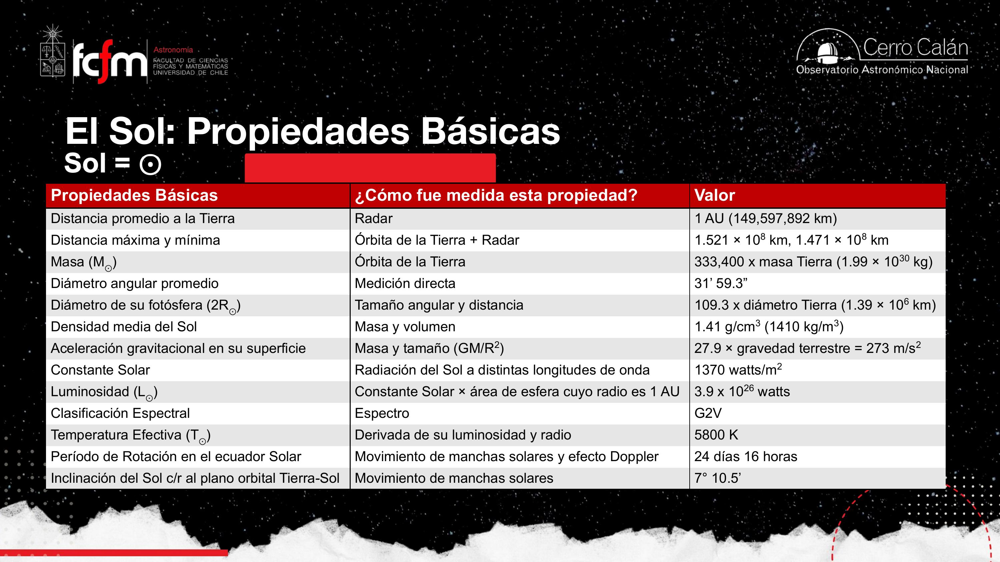
| Propiedad | Valor | Comentario de clase |
|---|---|---|
| Distancia promedio | 1 AU ≈ 149,6 millones de km | La unidad astronómica; “el número que uno se aprende con cariño”. |
| Distancia máx./mín. | 1,521×10⁸ / 1,471×10⁸ km | La órbita es elíptica; el Sol está en un foco. |
| Masa (M☉) | 1,99×10³⁰ kg ≈ 333.400 M⊕ | Se deduce de la órbita de la Tierra (gravitación). |
| Diámetro angular | 31′ 59,3″ (≈ 0,53°) | Medición directa: el ángulo que ocupa en el cielo. |
| Diámetro de la fotósfera | 1,39×10⁶ km ≈ 109,3 ⌀⊕ | Del tamaño angular + la distancia (trigonometría). |
| Densidad media | 1,41 g/cm³ | Menor que la de la Tierra (~5,5 g/cm³): es una bola de gas. |
| Gravedad superficial | 27,9 g⊕ = 273 m/s² | De GM/R². Aparece a menudo como log g. |
| Constante solar | 1370 W/m² | Flujo del Sol integrado en todo el espectro, medido a 1 AU. |
| Luminosidad (L☉) | 3,9×10²⁶ W | Constante solar × área de una esfera de radio 1 AU. |
| Clasificación espectral | G2V | Estrella G2, clase de luminosidad V (secuencia principal). |
| Temperatura efectiva | ≈ 5800 K | Es la temperatura de la fotósfera, no del interior (15 millones K en el centro). |
| Rotación (ecuador) | 24 d 16 h (~25 días) | En los polos, ~35 días: rotación diferencial (no es un sólido rígido). |
| Inclinación | 7° 10,5′ | Del eje solar respecto al plano orbital Tierra-Sol. |
La constante solar es un flujo (W/m²): lo que llega a 1 AU por metro cuadrado, integrado sobre todas las longitudes de onda (flujo bolométrico). Como el Sol emite isotrópicamente (igual en todas direcciones), basta multiplicar por el área de la esfera de radio 1 AU:
La secuencia espectral ordena estrellas por temperatura: O B A F G K M (de más caliente a más fría; después vienen L, T, Y para enanas marrones). No es orden alfabético: sobrevive la mnemotecnia de Harvard “Oh Be A Fine Guy/Girl And Kiss Me”. Dentro de cada letra hay subclases 0–9 (el Sol es G2). El número romano es la clase de luminosidad: V = enana de secuencia principal, es decir, una estrella que está fusionando hidrógeno en helio en su núcleo. Cuando deje de hacerlo, saldrá de la secuencia principal y cambiará esa clasificación.
La Luna está ~400 veces más cerca que el Sol y es ~400 veces más pequeña: por eso ambos ocupan casi el mismo ángulo en el cielo (~0,5°) y existen eclipses solares totales. Pero la Luna se aleja ~3–4 cm por año: en el futuro lejano los eclipses totales desaparecerán y solo habrá anulares o parciales. Vivimos en la época correcta.
Composición elemental
Casi todo hidrógeno — y por qué “% de átomos” no es “% de masa”.
El Sol es esencialmente una bola de hidrógeno y helio: el 92% de sus átomos son hidrógeno (el 73,4% de la masa) y el 7,8% helio (25% de la masa). El resto son trazas: carbono, nitrógeno, oxígeno, neón, magnesio, silicio, azufre, hierro… los mismos elementos del cuerpo humano y de la vida cotidiana (el hierro de la sangre, el calcio de los huesos, el magnesio de las vitaminas).
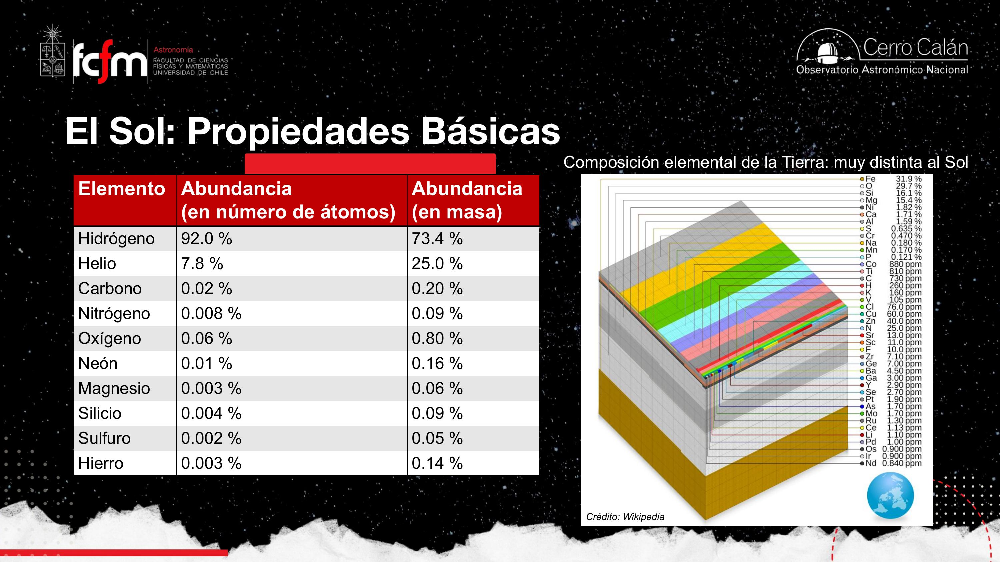
El magnesio y el hierro tienen la misma abundancia en número (0,003% de los átomos), pero el hierro es el 0,14% de la masa y el magnesio solo el 0,06%. La razón: el átomo de hierro pesa más (masa atómica ~56 vs. ~24). Es la diferencia entre contar unidades y pesar el inventario: mismo número de cajas, distinto peso por caja.
Luminosidad constante y clima terrestre
El Sol no se está enfriando — y no es el culpable del calentamiento global.
Si el Sol libera tantísima energía al espacio cada segundo, la pregunta natural es: ¿se está enfriando? La evidencia dice que no: la cantidad de radiación recibida en la Tierra ha sido esencialmente constante por miles de millones de años. El gráfico de irradiancia que parece “muy ondulado” engaña por la escala del eje: las variaciones van de ~340,2 a ~340,6 W/m² — si se grafica desde cero, es una línea recta.
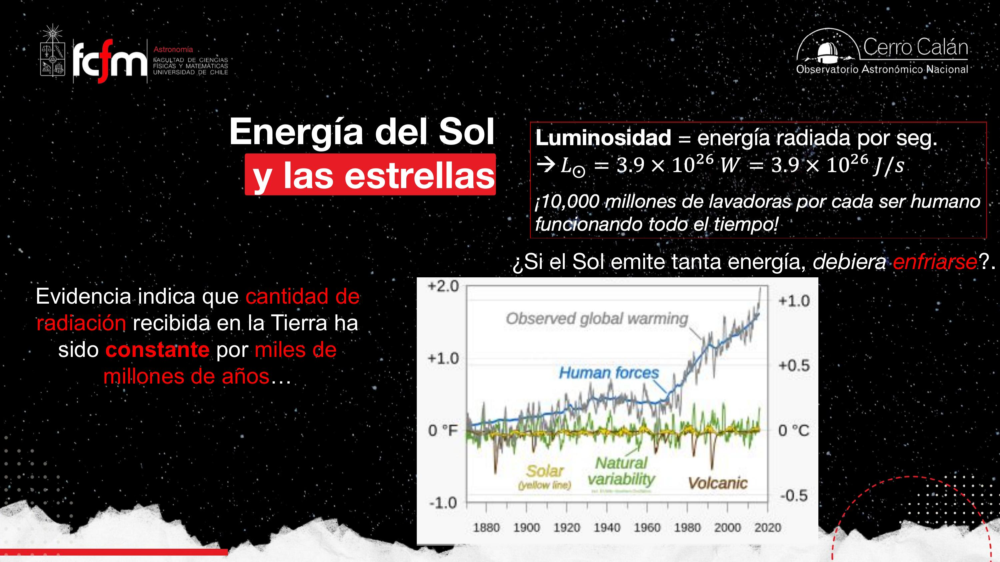
- La temperatura terrestre tiene variabilidad natural: ciclos geológicos, eras glaciales.
- Las grandes erupciones volcánicas inyectan aerosoles que bloquean radiación (efecto tipo “invierno nuclear”) y enfrían temporalmente.
- La contribución solar es estable: el Sol no explica ni las estaciones (eso es la inclinación del eje terrestre) ni el calentamiento reciente.
- El calentamiento observado calza con la curva de actividad humana industrial.
Esto es un problema clásico de atribución de señales: se descompone la serie de temperatura en forzantes (solar, volcánico, natural, antropogénico) y se compara cada componente con la observación. El forzante solar es prácticamente DC (constante); la única componente que reproduce la tendencia es la humana. También hay una lección de visualización: un eje truncado hace ver “enorme” una variación de 0,1%.
Conclusión intermedia: el Sol no se enfría y su luminosidad es constante. Entonces, de algún modo, está compensando internamente toda la energía que radia. ¿Cuál es la fuente?
Hipótesis 1: ¿combustión?
La “bola de fuego” de Pumba, descartada con una división.
La primera idea intuitiva: el Sol quema cosas, como una fogata gigante (la hipótesis de Pumba en El Rey León; Timón, escéptico, tenía razón). Analicémosla en serio, como haría un ingeniero con un balance de energía:
- La combustión (reacción química) libera en promedio J por átomo.
- El Sol tiene ~75% de su masa en H y ~25% en He, lo que da átomos en total.
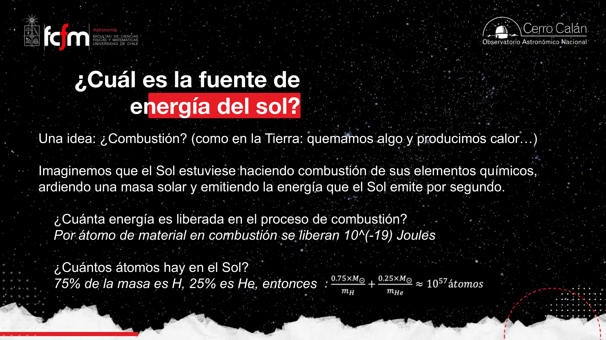
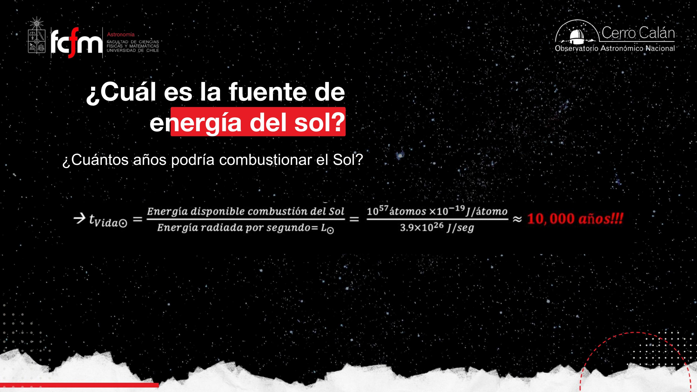
En astronomía se dice coloquialmente que una estrella “quema hidrógeno”, pero no es combustión química: es fusión nuclear (lo veremos en breve). En esta sección la clase evaluó la combustión literal —reacciones químicas— justamente para demostrar que no alcanza ni de lejos.
Hipótesis 2: contracción de Kelvin-Helmholtz
Convertir energía gravitacional en calor: mejor, pero aún insuficiente.
Segunda idea histórica: el Sol convierte energía potencial gravitatoria en energía termal al contraerse lentamente (como hace Júpiter hoy). Para entenderla, la clase definió dos energías:
Energía termal
Es la energía cinética colectiva de muchas partículas. La temperatura mide la velocidad promedio de las partículas; la energía termal depende además de cuántas partículas hay (densidad). El ejemplo de clase: una olla de agua hirviendo a 100 °C tiene más energía termal que el aire de un horno a 200 °C, porque el agua tiene muchísimas más partículas por unidad de volumen — aunque su temperatura sea menor.
Energía gravitacional
Es la energía potencial asociada a un campo gravitatorio: depende de la altura relativa a un punto de referencia, de la masa y de la aceleración de gravedad. La pelota lanzada hacia arriba lo resume: en el punto más alto tiene máxima energía potencial y velocidad cero; al caer, esa energía se convierte en cinética. La energía total se conserva: si sube una, baja la otra.
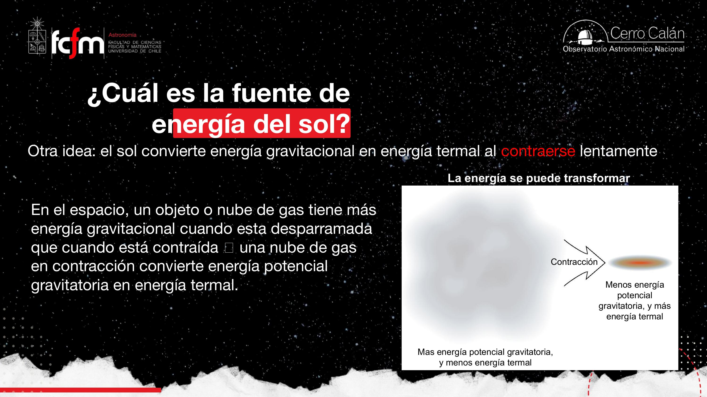
El mecanismo de Kelvin-Helmholtz
Kelvin y Helmholtz notaron que el peso de las capas superiores del Sol comprime las inferiores. Y al comprimir un gas, este se calienta — recordar la ley de gases ideales, . Eso genera un ciclo de autorregulación:
- El Sol radia energía → se enfría.
- Menor temperatura → menor presión.
- La presión (flechas azules, hacia afuera) se debilita → gana la gravedad (flechas rojas, hacia adentro) → el Sol se contrae.
- La contracción sube la presión → sube la temperatura → vuelta al inicio.
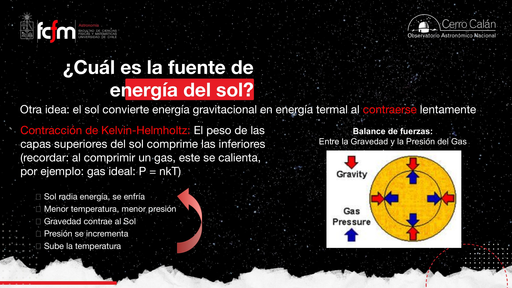
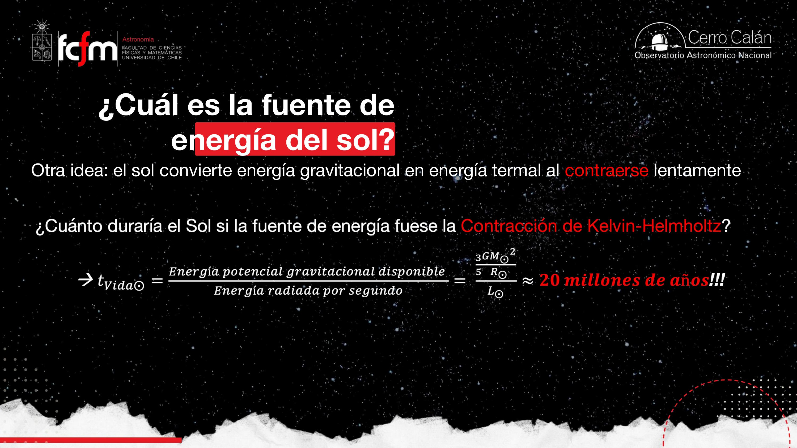
La contracción de Kelvin-Helmholtz sí existe y es clave en otras fases: es lo que calienta las protoestrellas antes de encender la fusión, y el mecanismo detrás del termostato solar que veremos en la sección 10. Lo que se descarta es que sea la fuente principal de energía del Sol adulto.
E = mc²: fusión vs. fisión
Necesitamos ~7 órdenes de magnitud más de energía por átomo. Einstein al rescate.
Ni la combustión ni la contracción alcanzan. Necesitamos un proceso que libere mucha, pero mucha más energía por átomo. La clave la dio Einstein con el principio de equivalencia masa-energía:
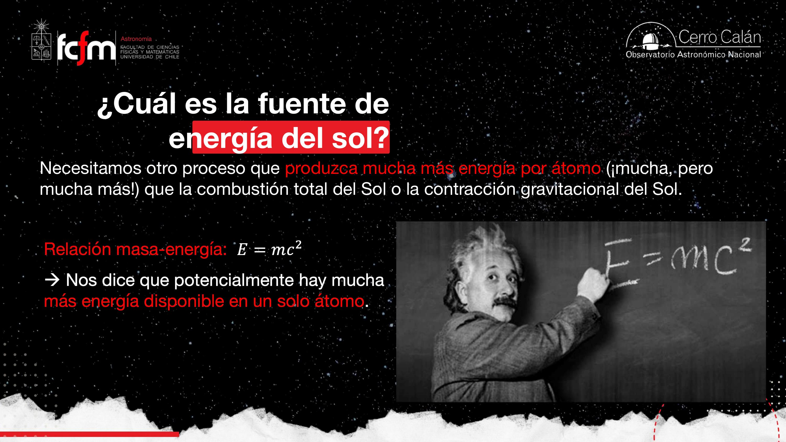
Dos formas de cobrar esa energía
- Fusión: núcleos livianos se combinan y generan un núcleo más pesado. Libera energía.
- Fisión: un núcleo pesado se divide en núcleos más livianos. También libera energía.
Las estrellas fusionan, no fisionan. (Spoiler de fin de curso: el hierro es el punto de quiebre donde la fusión deja de liberar energía — clave en la muerte de las estrellas masivas.)
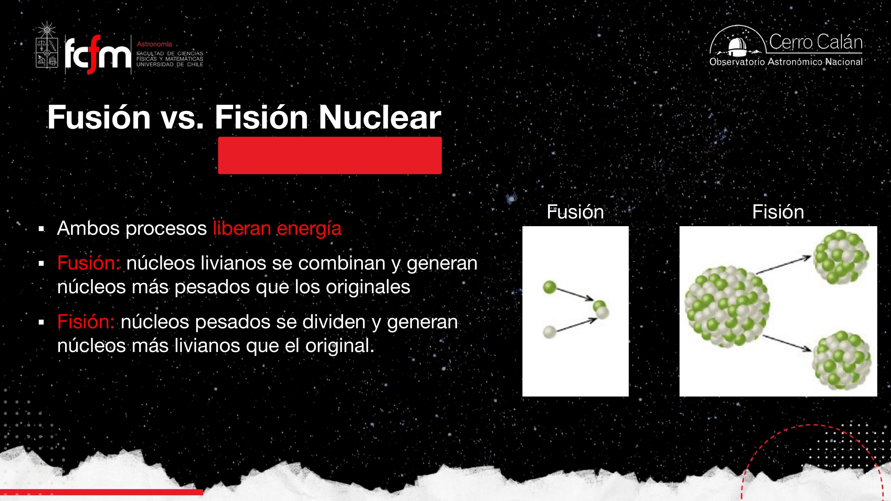
Plasma ionizado y condiciones para fusionar
Vencer la repulsión electromagnética requiere más de 10 millones de Kelvin.
En el interior del Sol, las altas temperaturas y densidades mantienen el gas como plasma ionizado: los electrones andan libres, separados de los núcleos. Los núcleos de hidrógeno (que son simplemente protones, carga +) también vuelan por todos lados y chocan constantemente.
El obstáculo: dos protones se repelen electromagnéticamente, como dos polos iguales de un imán. Hay dos regímenes de encuentro:
- Baja velocidad (baja T): los núcleos se acercan, la repulsión los frena y salen dispersados en direcciones distintas. No hay fusión.
- Alta velocidad (T > 10⁷ K): la colisión es tan energética que los núcleos se acercan lo suficiente para que la fuerza nuclear fuerte —de muy corto alcance— los capture y los una, venciendo la repulsión.
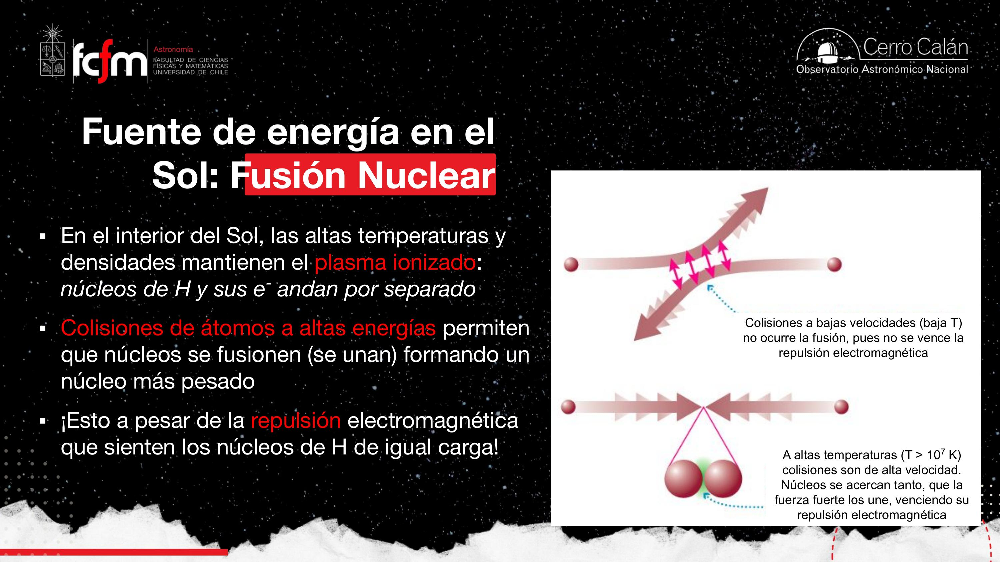
Ordenadas por lo que cuesta “vencerlas” en este contexto: la gravitacional es la más débil (basta saltar para ganarle un instante); la electromagnética es la barrera que repele a los protones (se necesitan >10⁷ K para superarla); la nuclear fuerte es la que mantiene unidos protones y neutrones en el núcleo (la que finalmente “pega” a los núcleos fusionados); y la nuclear débil gobierna los decaimientos radiactivos, como la conversión de protón a neutrón que veremos en la cadena p-p.
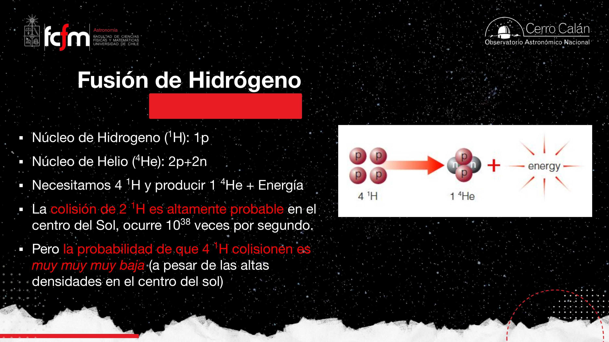
Es un argumento de probabilidad de coincidencias: si la probabilidad de una colisión binaria por unidad de tiempo es p, la de una colisión cuádruple simultánea escala como una coincidencia de orden superior — despreciable aun con densidades enormes. El sistema “elige” la ruta de reacciones en cadena de a pares, igual que un protocolo que descompone una operación improbable en pasos factibles.
La cadena protón-protón
De 4 protones a un helio-4, en tres pasos de a pares.
La cadena protón-protón (p-p) es la ruta dominante de fusión en el Sol. Balance global: 4 ¹H → ⁴He + energía. Paso a paso:
Paso 1 (ocurre 2 veces): ¹H + ¹H → ²H + e⁺ + ν
Dos protones se fusionan formando un núcleo con un protón y un neutrón: el deuterio (²H), un isótopo del hidrógeno (“el primo del hidrógeno-1”). Como la carga pasa de +2 a +1, la carga faltante se la lleva un positrón (el antielectrón, carga +), y además se emite un neutrino. En la conversión se conservan la carga, la energía, el momento y el spin.
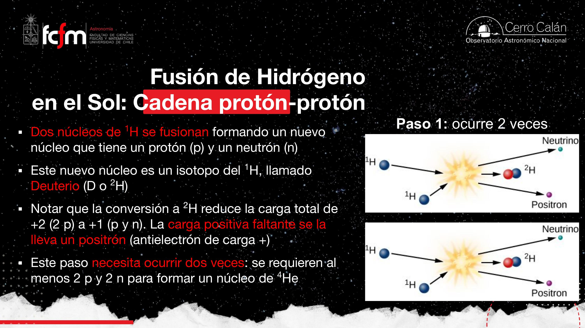
La gran mayoría de los neutrinos que recibimos en la Tierra provienen de la fusión nuclear en el interior del Sol (también los producen las supernovas). Casi no interactúan con la materia: por eso detectores como el del Polo Sur son tan gigantescos y capturan tan pocos.
Paso 2 (ocurre 2 veces): ²H + ¹H → ³He + γ
Como el paso 1 ocurre 10³⁸ veces por segundo, hay deuterio abundante. Un deuterio choca con otro protón y forma helio-3 (2p + 1n), liberando un fotón de rayos gamma de alta energía.
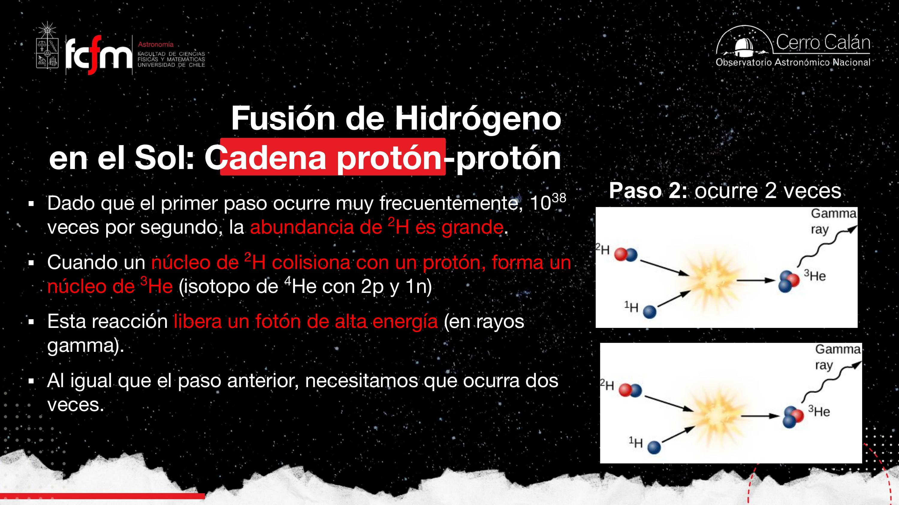
Paso 3: ³He + ³He → ⁴He + 2 ¹H
Hay varias rutas posibles, pero la más común en el Sol es la colisión de dos helio-3: se forma el helio-4 y salen despedidos dos protones, que quedan disponibles para nuevas cadenas.
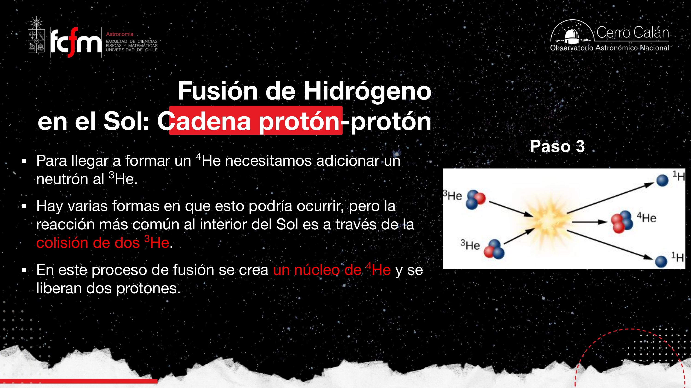
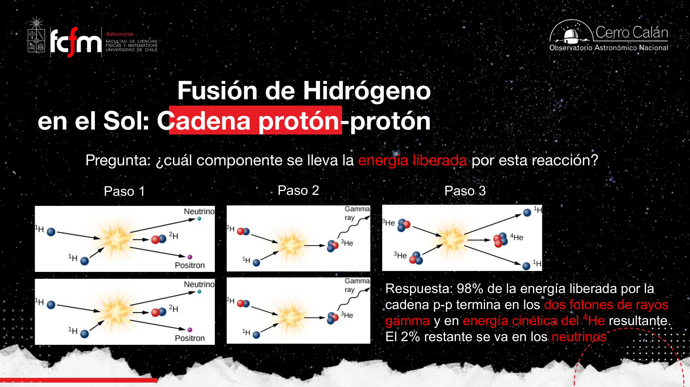
Pregunta de un estudiante al cierre: ¿el hidrógeno-2 (deuterio) es lo mismo que el hidrógeno molecular (H₂) de las nubes moleculares? No. El deuterio es un solo átomo cuyo núcleo tiene un neutrón extra (isótopo). El H₂ es una molécula: dos átomos completos de hidrógeno unidos por un enlace.
Contabilidad energética del Sol
El 0,7% de masa perdida, 600 millones de toneladas por segundo y 10.000 millones de años.
1) ¿Cuánta energía libera una cadena completa?
Pesemos entrada y salida del proceso 4 ¹H → ⁴He:
- 4 núcleos de H pesan kg.
- 1 núcleo de ⁴He pesa kg.
- Diferencia: kg — el 0,7% de la masa inicial “desaparece”.
Esa masa faltante no se pierde: se convierte en energía.
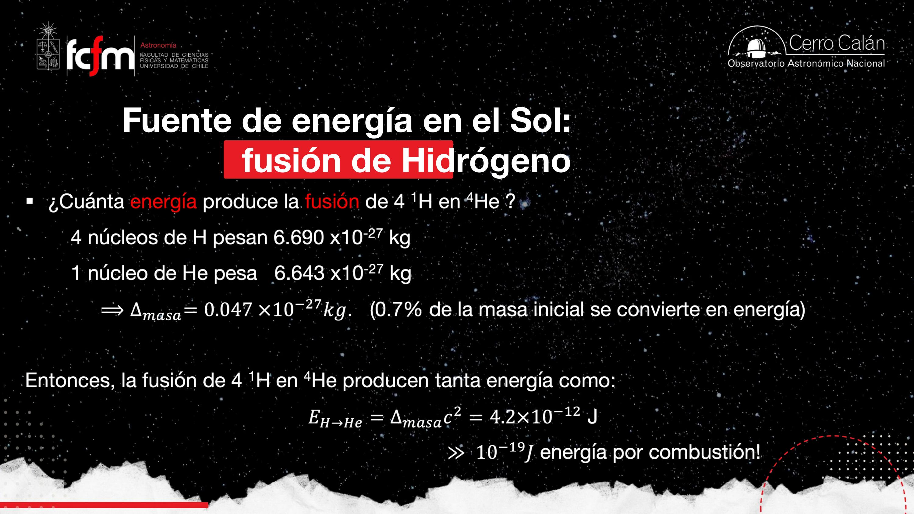
2) ¿Cuánto hidrógeno se fusiona por segundo?
La luminosidad dice cuánta energía sale por segundo; E=mc² dice cuánta masa hay que convertir para producirla:
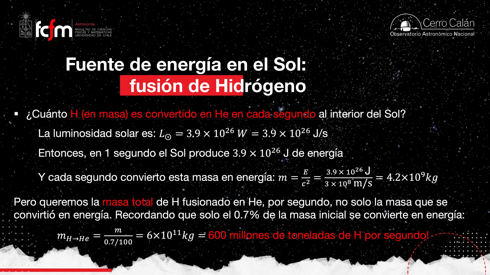
3) Verificación de consistencia: reacciones por segundo
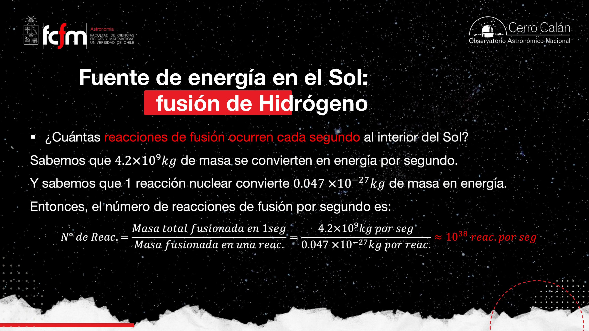
4) ¿Cuánto vive el Sol fusionando?
Misma receta batería: energía disponible dividida por potencia. Con un detalle: el Sol solo puede fusionar ~10% de su hidrógeno, porque la fusión solo ocurre en el núcleo (lo veremos al estudiar la estructura interna). De ahí el factor 0,1:
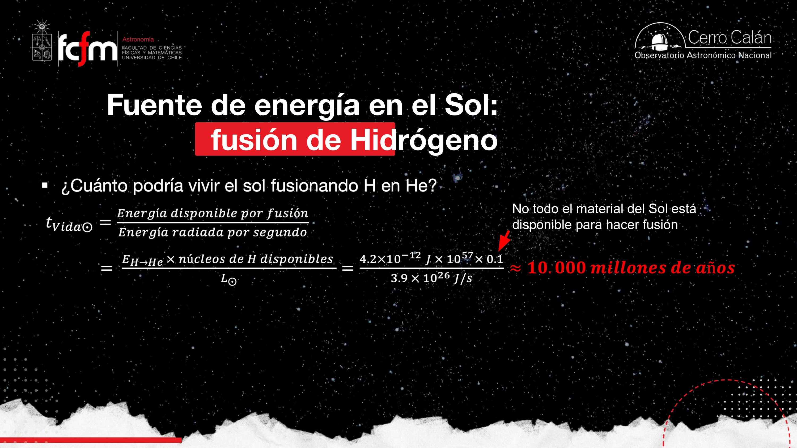
| Fuente hipotética | Energía por proceso | Tiempo de vida | Veredicto |
|---|---|---|---|
| Combustión química | ~10⁻¹⁹ J/átomo | ~10⁴ años | Descartada (la historia humana es más larga) |
| Contracción K-H | ⅗ GM²/R en total | ~2×10⁷ años | Insuficiente (el Sol tiene 4,6×10⁹ años) |
| Fusión de H | 4,2×10⁻¹² J/cadena | ~10¹⁰ años | ✓ Compatible con la evidencia |
Termostato solar y equilibrio hidrostático
Por qué la luminosidad es tan estable: control retroalimentado natural.
La tasa de fusión nuclear es extremadamente sensible a la temperatura: un pequeño cambio de T dispara o desploma la producción de energía. Si no hubiera regulación, veríamos la luminosidad del Sol fluctuar constantemente. No la vemos fluctuar porque existe el termostato solar, un lazo de retroalimentación negativa:
- Si la temperatura baja: baja la tasa de fusión → baja la presión → gana la gravedad → el núcleo se comprime → sube la temperatura → todo vuelve a la normalidad.
- Si la temperatura sube: sube la tasa de fusión → sube la presión → le gana a la gravedad → el núcleo se expande → baja la temperatura → todo vuelve a la normalidad.
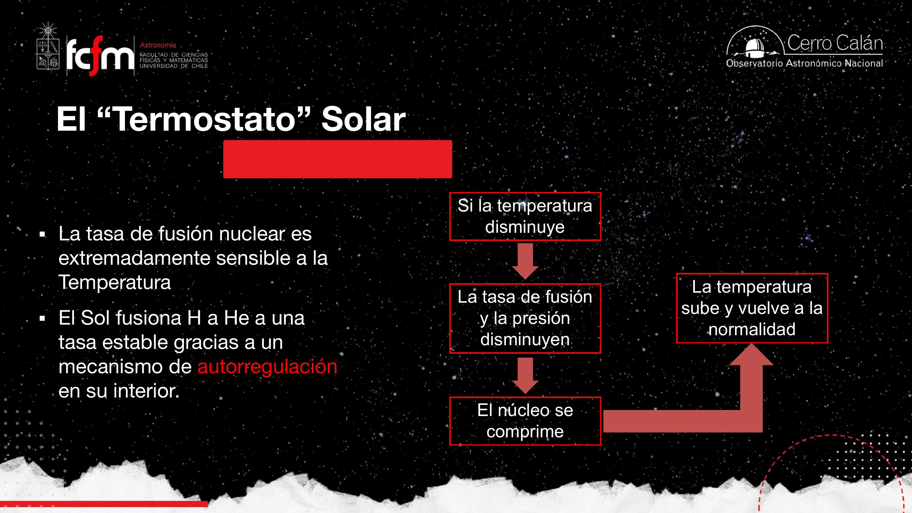
Es literalmente un lazo de control con ganancia negativa: la “planta” es la tasa de fusión (fuertemente no lineal en T), el “sensor/actuador” es la mecánica del gas (presión vs. gravedad), y el punto de operación es estable: cualquier perturbación genera una corrección en sentido contrario. Por eso el Sol emite a tasa constante sin que nadie “ajuste el dial”.
Equilibrio hidrostático
Al balance permanente entre presión y gravedad se le puso un nombre formal: equilibrio hidrostático. El empuje hacia afuera de la presión termal (sostenida por las reacciones nucleares del núcleo) equilibra el tirón hacia adentro de la gravedad. Con fuerzas hacia adentro desde todas las direcciones y presión hacia afuera en todas las direcciones, el resultado es una esfera — por eso las estrellas son redondas.
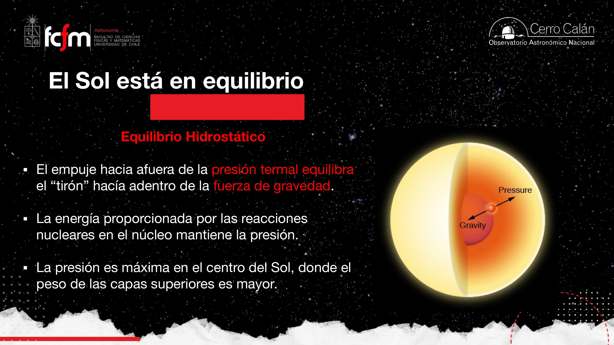
Complemento del equilibrio hidrostático: la energía liberada por la fusión en el interior equilibra la energía radiada en la superficie. El Sol no acumula energía como una pila: lo que genera, lo libera. Pregunta que queda planteada para la próxima clase: ¿qué pasaría con ambos equilibrios si se acaba el hidrógeno del núcleo?
Cómo escapa la energía del interior
Random walk de 170.000 años, neutrinos apurados y celdas de convección.
Los fotones de rayos gamma nacen en el núcleo. Si pudieran viajar en línea recta, recorrerían el radio solar en ~2 segundos. Pero el interior es un plasma ionizado repleto de electrones libres, y la densidad es tan alta que el camino libre medio de un fotón —lo que avanza antes de interactuar— es menos de un milímetro. Cada interacción lo desvía en una dirección aleatoria: es la difusión radiativa.
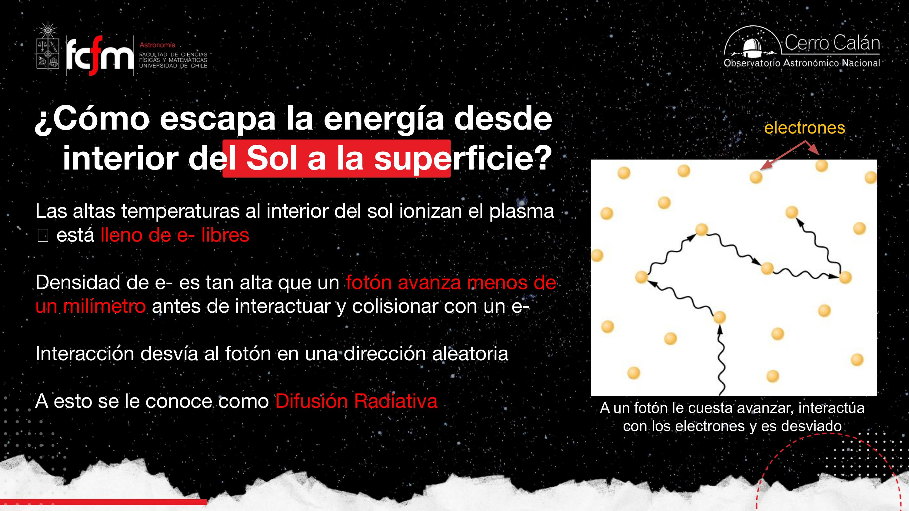
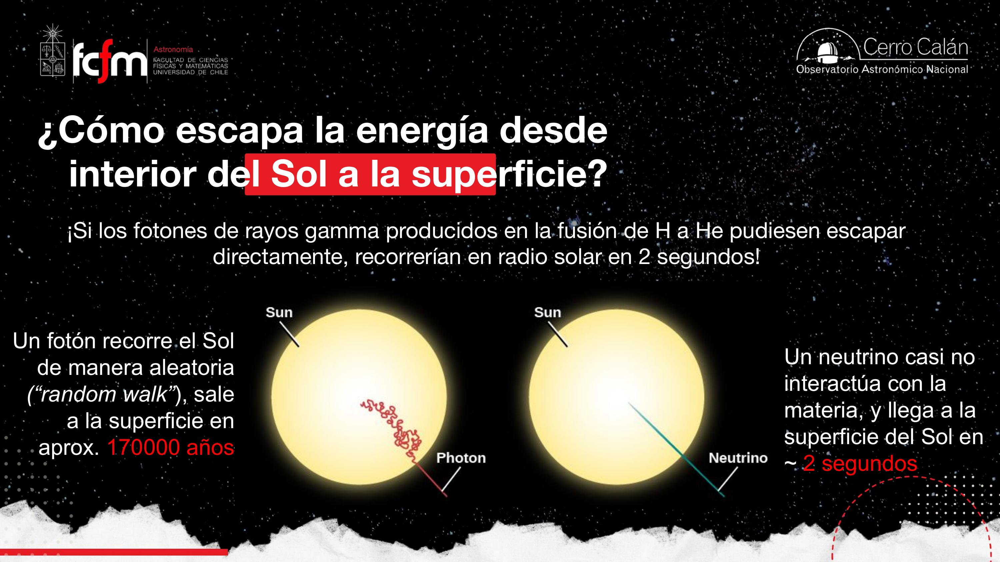
Pregunta de clase: si la fusión emite rayos gamma, ¿por qué el Sol no nos esteriliza? Porque en cada interacción el fotón cede energía (por ejemplo, a la energía cinética del electrón con el que interactúa). Tras cientos de miles de años de choques, la energía que finalmente escapa por la fotósfera está degradada hacia el visible/IR. La forma exacta del espectro se ve en la parte 2.
Convección y granulación
Cerca de la superficie, el transporte de energía cambia de mecanismo: aparecen las celdas de convección, como el agua hirviendo en una olla. Burbujas de gas caliente suben, se enfrían en la superficie, y el material frío baja a reemplazarlas. No hay transferencia neta de masa (lo que sube se compensa con lo que baja); lo que se transporta es energía. El patrón visible resultante en la fotósfera es la granulación solar: ese aspecto de “panal de abejas” que se aprecia con un telescopio solar.
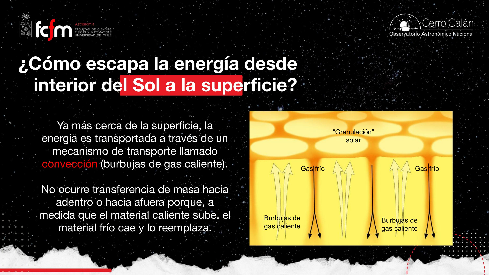
La energía producida en el núcleo tarda cientos de miles de años en llegar a la fotósfera… y luego solo 8 minutos desde el Sol hasta la Tierra. La luz del Sol que ves ahora se “fabricó” antes de que existiera el Homo sapiens.
Estructura interna del Sol capa por capa, cómo estudiamos su interior, actividad solar (manchas, ciclos) y sus efectos en la Tierra.
Explorar conceptos
Tres widgets para jugar con los números de la clase.
Conceptos clave
Tabla de repaso rápido.
| Concepto | Qué es / valor | Por qué importa |
|---|---|---|
| L☉ | 3,9×10²⁶ W (constante solar 1370 W/m² × esfera de 1 AU) | La potencia que cualquier hipótesis de fuente debe sostener |
| G2V | Tipo espectral G2, clase V (secuencia principal) | El Sol es una enana que fusiona H→He en su núcleo |
| T efectiva vs. T central | 5800 K (fotósfera) vs. 15×10⁶ K (núcleo) | “La temperatura del Sol” depende de qué capa se hable |
| Rotación diferencial | ~25 días en el ecuador, ~35 en los polos | El Sol no rota como sólido rígido: es gas/plasma |
| Composición | 92% de átomos H (73% masa), 7,8% He (25% masa) | El combustible de la fusión es abundantísimo |
| Combustión | 10⁻¹⁹ J/átomo ⇒ vida de ~10⁴ años | Descartada: el Sol es muchísimo más viejo |
| Contracción K-H | Peso comprime, gas se calienta (P = nkT) ⇒ ~2×10⁷ años | Insuficiente como fuente, pero real como mecanismo |
| E = mc² | Equivalencia masa-energía | Habilita ~10⁷ veces más energía por proceso que la química |
| Fusión vs. fisión | Livianos→pesado vs. pesado→livianos; ambas liberan energía | Las estrellas fusionan; el hierro es la excepción futura |
| Plasma ionizado | Gas tan caliente que núcleos y e⁻ andan separados | Condición del interior solar; requiere T > 10⁷ K para fusionar |
| Cadena p-p | 2(¹H+¹H→²H+e⁺+ν) → 2(²H+¹H→³He+γ) → ³He+³He→⁴He+2¹H | La ruta real de 4 ¹H → ⁴He, de a pares |
| Δm = 0,7% | 4,2×10⁻¹² J por cadena; 600 M ton H/s; 10³⁸ reacciones/s | La contabilidad que cierra todos los números |
| Vida del Sol | ~10¹⁰ años (fusionando solo el 10% de su H) | Con 4,6×10⁹ años, el Sol va por la mitad |
| Termostato solar | Retroalimentación negativa T ↔ presión ↔ gravedad | Explica la luminosidad constante |
| Equilibrio hidrostático | Presión (afuera) = gravedad (adentro); P máxima en el centro | Por qué las estrellas son esferas estables |
| Difusión radiativa | Camino libre medio <1 mm; escape en ~170.000 años | El fotón sale por random walk; el neutrino, en ~2 s |
| Convección / granulación | Burbujas calientes suben, frías bajan (sin transferencia de masa) | Transporte de energía en las capas externas; patrón visible |
Exámenes de práctica
10 exámenes de 5 preguntas (3 de alternativas autocorregibles + 2 de respuesta escrita).